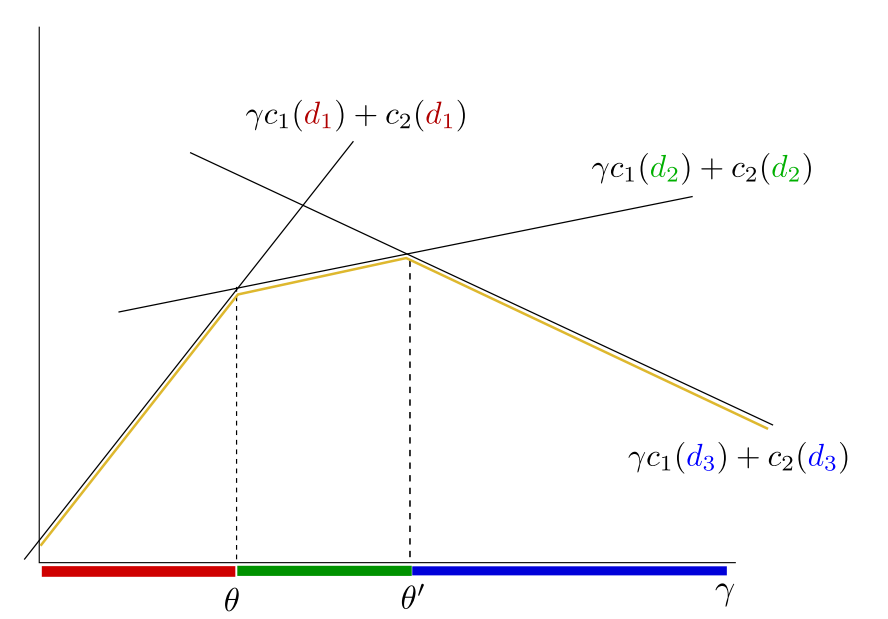

Bayesian Decision making should be used when:
Bayesian strategies have 2 general proprieties:
\(p(x = x') = 0.3 \rightarrow\) The probability of \(x'\) happening is 0.3.
\(p(x) \rightarrow\) the probability function or distribution.
\(X\) : is the set of observations (info about the object)
\(K\): is the set of classes, what is not known about the object
\(D\): is the set of possible decisions
\(p_{XK}\): \(X\times K \rightarrow \mathbb R\) is the joint probability that the object is in the state \(k\) and the observation \(x\) is made
\(W\): \(K \times D \rightarrow \mathbb R\) is the penalty (loss) function. its defined for Bayesian problems
\(q: X \rightarrow D\) is the decision function assigning for for each \(x \in X\) the decision \(q(x) \in D\).
\(R(q)\) is the expected loss of a given strategy (the risk). It can be formulated as the following mathematical equation: \[ R(q)=\sum_{x \in X}\sum_{k\in K} p(X = x, K = k) \times W(k,q(x)) \]
Knowing the sets \(X,K\), the joint probability \(p_{X,K}:X\times K \rightarrow \mathbb R\) and the penalty function \(W:K\times D \rightarrow \mathbb R\). For the strategy \(q:X \rightarrow D\), we can call the following function the Bayesian Risk: \[ R(q)=\sum_{x \in X}\sum_{k\in K} p(X = x, K = k) \times W(k,q(x)) \] The Bayesian Strategy \((q^*)\) is the strategy which minimizes the Bayesian risk: \[ q^*=\underset{q\in X \rightarrow D}{\text{argmin }} R(q) \] Another way of writing the Bayesian Strategy is doing it for each \(x\in X\): \[ q^*(x) = \underset {d\in D}{\text{argmin}} \sum_{k\in K} p(k/x)\times W(k,d) \]
In this case the set of possible decisions \(D\) should coincide with the set of hidden states \(K\). The loss function assigns penalty of the strategy is not correct.
We can calculate the partial risk for \(x\): \[ R(x,d) = 1 - p(d/x) \] and the optimal strategy for \(x\) is: \[ q^*(x) = \underset {d\in D} {\text{argmax }} p(d/x) \] The Bayesian strategy for this problem is: \[ \text{For a given observation $x$, decide for the state with the }\\ \text{posterior probability $p(d/x)$ } \]
We can formulate the Bayesian strategy with 3 possible answers: \[ \{\text{positive},\text{negative},\text{not know}\} \] where we are penalizing more if you answer is wrong than if you say you don’t know. With the 0-1 loss function, we can assign the new loss function as the following: \[ \array{ \text{correct answer}& \rightarrow &0 \\ \text{wrong answer}& \rightarrow & 1\\ \text{not known} &\rightarrow &\epsilon \in (0,1) } \] We are assigning \(\epsilon\) to the not known case within those values because:
Let \(X,K\) be the set of observations and states, \(p:X\times K \rightarrow \mathbb R\) be the probability distribution and \(D = K \cup \{\text{not known}\}\) be the set of decisions.
We will define \(W(k,d)\) as: \[ W(k,d)= \left \{ \array{ 0 && d = k\\ 1 && d \neq k \text{ and } d\neq \text{not known} \\ \epsilon && d = \text{not known} } \right. \] To find the Bayesian Strategy, we need to minimize the partial risk: \[ q^*(x) = \underset {d\in D}{\text{argmin }} \sum_{k\in K} p(k/x)\times W(k,d) \] The strategy \(q^*(x)\) can be described as follows:
First, find the state \(k\) which has the largest posterior probability. Let this probability be denoted by \(p_{max}(x)\). If \(1-p_{max}(x) < \epsilon\), then the optimal decision is \(k\), else, the optimal decision is not known.
If the prior probabilities \(p(K=k)\) and the penalty \(W(k,d)\) are known then the decision \(q^*(x)\) about the observation \(x\) is: \[ q^*(x)=\underset {d}{\text{argmin }}(\gamma(x)c_1(d) + c_2(d)) \] and we are going to replace: \[ c_i(d) = p(K=i) \times W(i,d) \] The subset of observations \(X(d^*)\) for which the decision \(d^*\) should be made is the solution of the following system of inequalities: \[ \array {\gamma(x) c_1(d^*) + c_2(d^*) \le \gamma(x) c_1(d) + c_2(d) & d \in D\backslash \{d^*\} } \] This system is linear with respect to the likelihood ratio.

Any Bayesian strategy divides the real axis \([0,\infty)\) into \(\#D\) intervals \(I(d), d\in D\). The decision \(d\) is made for an observation\(x\in X\) when the likelihood ratio \(\gamma = \frac {p_{X/1}(x)}{p_{X/2}(x)}\) belongs to the interval \(I(d)\).